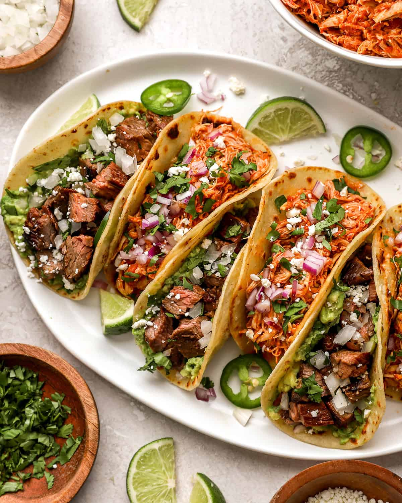

Crunchy Tacos
Home

Description
Super easy and tasty street taco recipes! This recipe is customizable with any meat or veggie toppings
Ingredients
- 1 serving of chicken (or any meat of your choice)
- 12 corn tortillas
- 1 cup chopped cilantro
- 1 cup chopped onion
- 2 cups cheddar cheese
- 1 cup black beans
- 1 avocado
- 1/2 lemon
Steps
- Grill and chop the chicken according to the recipe instructions
- Mash avocado with a fork. Sprinkle salt and pepper. Squeeze lemon juice. Stir
- Fill each tortilla with a spread of avocado and a scoop of meat
- Add fresh cilantro, onion, beans and cheese on each taco. Finish with lemon juice on top